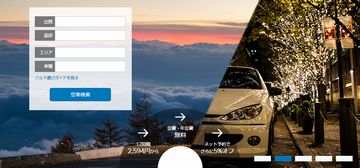
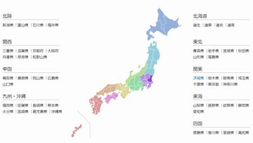

Works - Corporate Site
コーディングに関わったコーポレートサイトのうち、2017年現在の直近のものをご紹介いたします。
基本的にはJavaScriptのコーディングが主な担当であり、関連するHTMLとCSSについてもコンポーネント単位で作成しました。
プロジェクトの方針次第では、JavaScript側からHTML,CSSの生成を行い、メンテナンスの容易さを優先した構成となることを優先しています。
大手複合商業施設サイト

- 担当業務
-
- JavaScriptコーディング(全範囲)
- 一部のCSS, HTMLコンポーネント作成
- コーディング形態
-
- jQuery, vue.js 使用
- アニメーションや特殊UIはスクラッチでの開発
- 開発期間40日程度＋公開後に断続的な改修

特殊なUIを多く含むものの、開発期間が限られてライブラリを選択する時間的な余裕も難しかったこともあり、 jQueryは要素選択やCSS操作程度に使用、JSテンプレートエンジンはvue.jsを使用、それ以外については ほぼスクラッチでの開発となりました。
開発当初のトップページは HTML記述の可能な巨大なカルーセルを使用し、ナビゲーションをその上に被せて表示するものだったため、非常に難易度の高いコーディング技術が要求されました。その際、ロゴのSVGが背景色に溶け込むなどの影響もあり、canvasで動的に平均色を割り出した色範囲に対応してロゴを入れ替えるなどの処理も加えました。 リリース直前に仕様が変わって余白の多いデザインに代わりましたが、アニメーションタイプや各サイズの設定値をまとめた汎用的なつくりにしていたため、頻繁な仕様変更に対応可能な構成になっています。
特殊UIとして特筆すべきものに「フロアマップ」が挙げられます。
GoogleMapsと同様の操作感を実現した画像ビューアが必要とされ、アニメーション付きズーム（ピンチイン・ピンチアウト）や慣性を効かせたスクロール、特定の座標へのピン表示など、すべてスクラッチで作成しました。（座標変換や指数対数計算などが絡み、数学的にも難しいものでした）
都内私立大学 入試サイト
- 担当業務
-
- JavaScriptコーディング(リニューアル時の改修)
- その他 特設サイトのJSコーディング
基幹システムのログイン情報に関するAPIと連携したJavaScriptのメンテナンスを担当しました。 主に、以前 Backbone.js + CoffeeScript + jQuery を使用して作成されたコードに潜伏している不具合の発見・改修を行い、単体試験については専用のブックマークレットを作成して対応しました。
その他
サイトに使用するコンポーネントのうち、JavaScriptへの依存性の高いものについては、メイン担当業務以外のサイトについても担当いたしました。 多くは、
- グローバルナビ（メガメニュー）とスマホ版のアコーディオンメニューの連携
- TabUIとstickey要素の管理
- カルーセル（自動送り・手動送り双方）
等を扱い、いずれも一般的なJSライブラリでのカスタマイズの範囲を超えた特殊なデザインのものを担当しております。

特殊効果で切り替わるカルーセル

map-area要素での指定が困難なクリッカブルマップ
特殊効果カルーセル
車のワイパーのような動きで画像を切り替えたい という要件があり、canvas要素で対応しました。
２枚のcanvasをレイヤーとして重ね合わせることで動作の軽いカルーセルとして仕上げています。
カルーセル内に検索フォーム、さらに下部中央にも円形のアクセサリが配置され、これらの大きさと位置は画面サイズに完全に依存するため、
(css3で新しく導入された)vwを単位として使用し、極力JavaScriptを使用せずにcssで済むように工夫しています。
クリッカブルマップ
日本地図からエリアを選択したい という要件があったものの、HTMLでの <map><area/></map> はデータの作成とメンテナンス性に難があるため、
一定値以上のalphaを超える同色で塗られた領域を１つのエリアとみなすJSプログラムを作成し、PNG画像から自動的にクリッカブルマップとして認識させています。この画像の解析にもcanvasを使用し、ピクセルデータの扱いで動作が重くならないよう、アルゴリズムにも工夫しました。